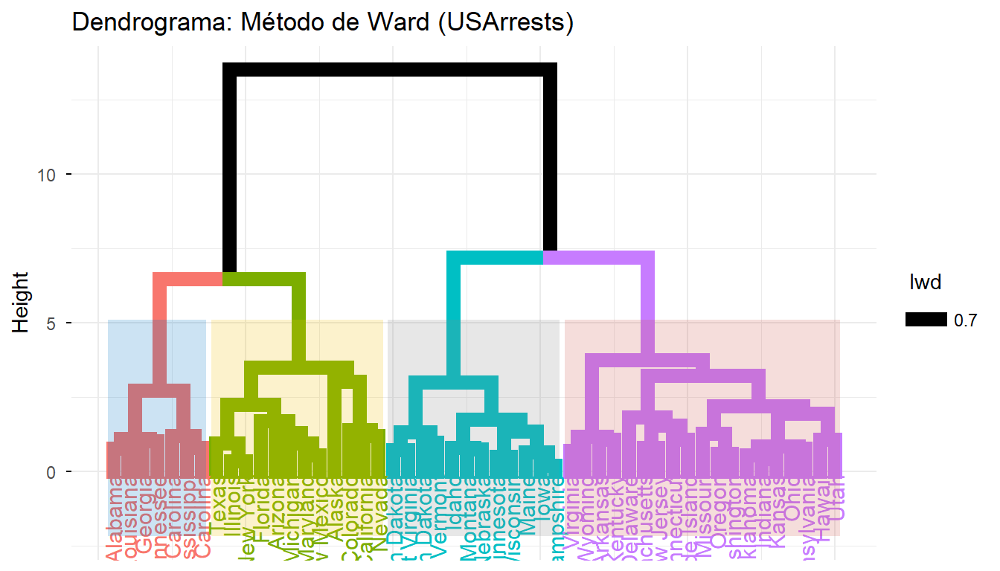
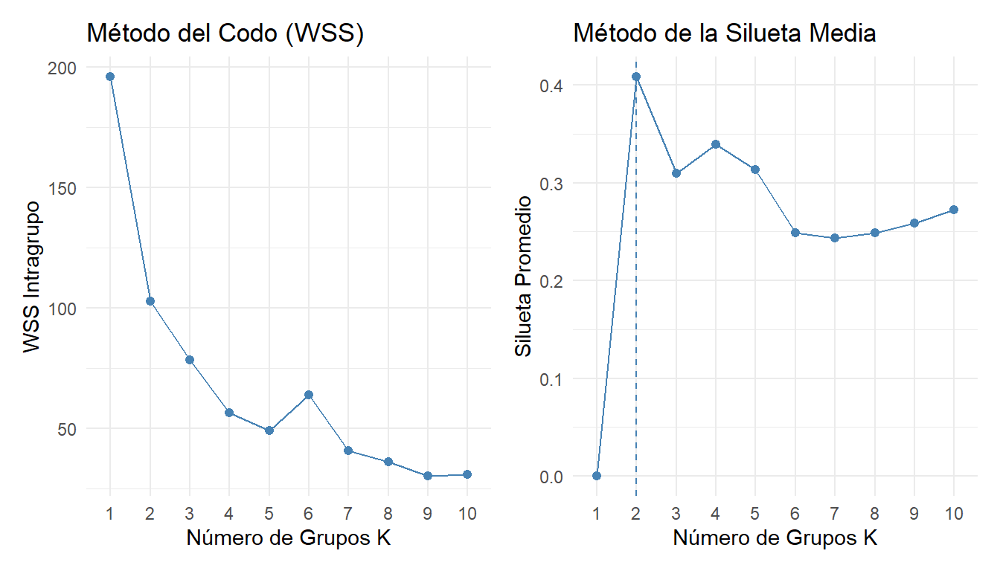
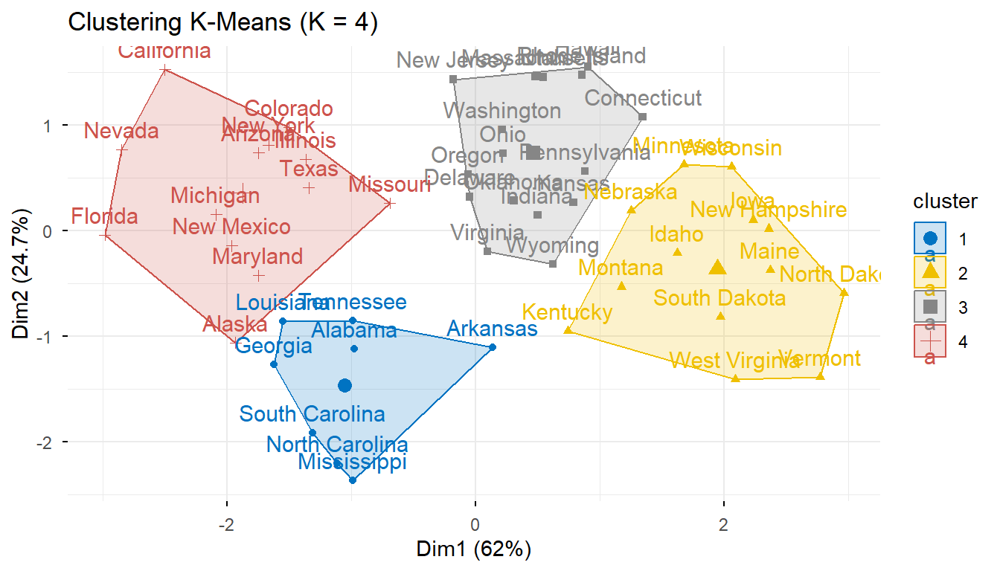
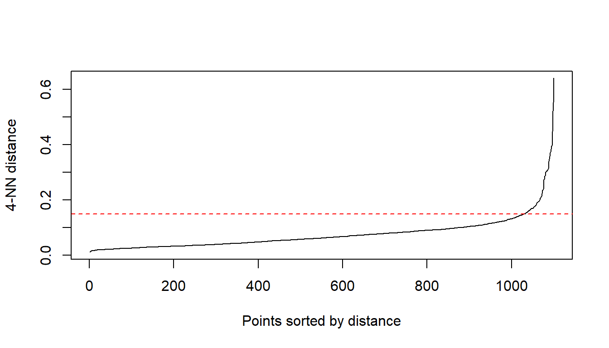
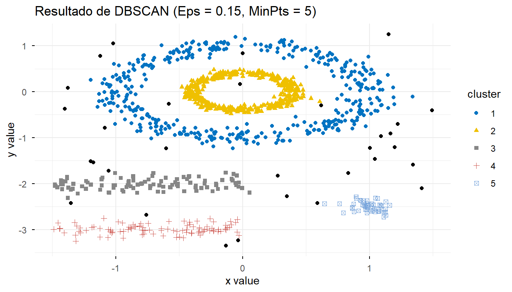
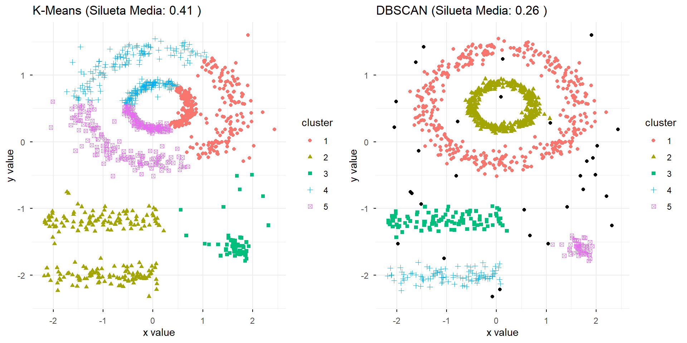

Capítulo 8 Análisis de conglomerados
El Análisis de Conglomerados (o Clustering) comprende un conjunto de técnicas estadísticas multivariadas de aprendizaje no supervisado orientadas a particionar o agrupar un conjunto de \(n\) observaciones (o individuos) en \(K\) clases o grupos homogéneos (clusters).
El principio rector del análisis de conglomerados es geométrico y descriptivo: busca maximizar la homogeneidad intragrupo (mínima variabilidad o distancia dentro de cada grupo) y la heterogeneidad intergrupo (máxima distancia o separación entre los centros de los diferentes grupos).
8.1 Naturaleza y Supuestos del Análisis de Conglomerados
A diferencia de las técnicas de aprendizaje supervisado (como el Análisis Discriminante o la Regresión Logística), el análisis de conglomerados presenta las siguientes características fundamentales:
- Ausencia de variable respuesta (\(Y\)): No existen etiquetas previas ni categorías conocidas a priori.
- Técnica no inferencial: Es un procedimiento exploratorio y descriptivo; no requiere supuestos de normalidad multivariada, linealidad o homocedasticidad.
- Sensibilidad a las covariables: La inclusión o exclusión de variables irrelevantes puede alterar sustancialmente la estructura final de los grupos.
8.1.1 Condiciones para una Aplicación Óptima
- Tratamiento de valores atípicos (outliers): Los puntos atípicos distorsionan los centroides o actúan como conglomerados unitarios.
- Escala homogénea o estandarización: Cuando las variables están medidas en unidades o magnitudes distintas, se deben estandarizar (mediante puntuaciones \(Z\) o transformaciones de rango) para evitar que una variable domine sobre las demás.
- Poca o nula multicolinealidad: Si dos variables están fuertemente correlacionadas, están aportando información redundante y sobreponderando esa dimensión en el cálculo de las distancias.
8.1.2 Etapas del Análisis de Conglomerados
Cualquier estudio de clasificación de conglomerados debe seguir un flujo metodológico de cuatro etapas:
\[\text{1. Selección de Variables} \longrightarrow \text{2. Medida de Asociación/Distancia} \longrightarrow \text{3. Algoritmo de Clustering} \longrightarrow \text{4. Validación e Interpretación}\]
Los algoritmos de formación de conglomerados se dividen fundamentalmente en dos categorías:
| Criterio de Comparación | Métodos Jerárquicos | Métodos No Jerárquicos (\(K\)-Medias / PAM) |
|---|---|---|
| Definición de \(K\) | No exige definir el número de grupos a priori. | Exige definir el número \(K\) de grupos previamente. |
| Proceso Algorítmico | Iterativo en \((n-1)\) pasos, jerárquico de abajo a arriba o viceversa. | Reasignación iterativa comparando distancias a los centroides de los grupos. |
| Visualización y Salida | Genera una estructura jerárquica o árbol (Dendrograma). | Proporciona las coordenadas finales de los centroides de cada grupo. |
| Tamaño de Muestra (\(n\)) | Requiere gran cantidad de cálculos (\(O(n^2)\)), limitado para muestras grandes. | Eficiente computacionalmente; ideal para grandes volúmenes de datos. |
| Flexibilidad de Asignación | Asignación rígida: las uniones previas no se pueden deshacer. | Reasignación dinámica: un elemento puede cambiar de grupo en cada iteración. |
| Objeto de Análisis | Pueden aplicarse tanto sobre individuos/casos como sobre variables. | Solo se aplican sobre casos o individuos. |
8.2 Métodos Jerárquicos
Los métodos jerárquicos construyen una estructura anidada de particiones. Se dividen en:
- Aglomerativos (Bottom-up): Parten de \(n\) conglomerados unitarios (cada individuo es un grupo) y en cada paso fusionan los dos grupos más cercanos hasta formar un único grupo global de tamaño \(n\).
- Disociativos (Top-down): Parten de un único conglomerado global con los \(n\) individuos y lo dividen sucesivamente en subgrupos cada vez más homogéneos.
8.2.1 Criterios de Enlace (Linkage) entre Conglomerados
La distancia \(D(A, B)\) entre dos conglomerados \(A\) y \(B\) depende de la regla de asociación utilizada:
8.2.1.1 Vecino Más Próximo (Single Linkage / Salto Mínimo)
Mide la distancia mínima entre un elemento del grupo \(A\) y uno del grupo \(B\):
\[D_{\text{Single}}(A, B) = \min_{x_i \in A, \, x_j \in B} d(x_i, x_j)\]
- Inconveniente: Tiende a crear conglomerados alargados en cadena (chaining effect).
8.2.1.2 Vecino Más Lejano (Complete Linkage / Salto Máximo)
Mide la distancia máxima entre elementos de ambos grupos:
\[D_{\text{Complete}}(A, B) = \max_{x_i \in A, \, x_j \in B} d(x_i, x_j)\]
- Propiedad: Produce grupos compactos y de diámetros similares.
8.2.1.3 Promedio entre Grupos (Average Linkage - UPGMA)
Calcula el promedio de las distancias entre todos los pares formados por un elemento de \(A\) y uno de \(B\):
\[D_{\text{Average}}(A, B) = \frac{1}{|A| \cdot |B|} \sum_{x_i \in A} \sum_{x_j \in B} d(x_i, x_j)\]
8.2.1.4 Método del Centroide
Evalúa la distancia entre los centroides (vectores de medias \(\bar{x}_A\) y \(\bar{x}_B\)) de cada grupo:
\[D_{\text{Centroide}}(A, B) = d(\bar{x}_A, \bar{x}_B)\]
8.2.1.5 Método de Ward (Mínima Varianza / Pérdida de Inercia)
Fusiona los dos grupos que minimizan el incremento en la Suma de Cuadrados Intragrupo (\(SSE\)):
\[\Delta SSE = \frac{|A| \cdot |B|}{|A| + |B|} \|\bar{x}_A - \bar{x}_B\|^2\]
- Propiedad: Es uno de los métodos más potentes en la práctica, creando grupos con varianzas similares y tamaños balanceados.
8.2.2 Representación Gráfica: El Dendrograma
El dendrograma es la representación en forma de árbol binario de la jerarquía de agrupaciones. La altura de los codos o uniones horizontales indica la distancia a la cual se fusionaron dos conglomerados.
8.2.2.1 Criterio del Salto Brusco para determinar \(K\):
Para elegir el número óptimo de grupos \(K\), se busca en el gráfico de evolución de las distancias el paso donde se produce un incremento brusco en la distancia de fusión.
library(knitr)
library(ggplot2)
if (!requireNamespace("factoextra", quietly = TRUE)) install.packages("factoextra")
library(factoextra)
# 1. Conjunto de datos de prueba: USArrests
data("USArrests")
datos_esc <- scale(USArrests)
# 2. Matriz de distancias Euclidianas
dist_euc <- dist(datos_esc, method = "euclidean")
# 3. Agrupamiento con el Método de Ward
hc_ward <- hclust(dist_euc, method = "ward.D2")
# 4. Dendrograma con corte horizontal en K = 4
fviz_dend(hc_ward, k = 4,
rect = TRUE,
rect_fill = TRUE,
rect_border = "jco",
ggtheme = theme_minimal(),
main = "Dendrograma: Método de Ward (USArrests)")
Figura 8.1: Dendrograma de clustering jerárquico aglomerativo (Ward) en R sobre datos estandarizados.
8.3 Métodos No Jerárquicos (Particionales)
A diferencia de los métodos jerárquicos, los métodos no jerárquicos parten directamente de la matriz original de datos numéricos (o coordenadas) y no requieren construir una matriz de proximidades completa ni una estructura anidada en forma de árbol.
Estos algoritmos dividen directamente el conjunto de \(n\) observaciones en \(K\) conglomerados independientes y mutuamente excluyentes, donde el número de grupos \(K\) debe ser prefijado por el usuario antes de iniciar el procedimiento.
8.3.1 Principios Fundamentales
Los métodos no jerárquicos son especialmente eficientes para el análisis de grandes conjuntos de datos (donde el cálculo de matrices de distancia \(n \times n\) resulta computacionalmente inviable) y se basan en procesos de reasignación iterativa:
- Partición Inicial: Se fijan \(K\) centroides iniciales en el espacio \(p\)-dimensional.
- Reasignación Dinámica: Cada observación es asignada al centroide más cercano en términos de distancia geométrica. A diferencia de los métodos jerárquicos (donde una unión no puede deshacerse), una observación asignada a un conglomerado en una iteración puede cambiar a otro grupo en pasos posteriores si esto mejora el criterio de homogeneidad.
- Optimización Intragrupo: El proceso itera recalculando los centroides de los grupos tras cada incorporación hasta que la asignación de observaciones converge y se estabiliza.
8.3.2 Algoritmo \(K\)-Means (\(K\)-Medias)
El objetivo matemático de \(K\)-Means es particionar las \(n\) observaciones en \(K\) conjuntos \(S = \{S_1, S_2, \dots, S_K\}\) minimizando la variabilidad dentro de los grupos, expresada a través de la Suma de Cuadrados Intragrupo (\(WSS\) o \(SSE\)):
\[\min_{S} \sum_{k=1}^{K} \sum_{x_i \in S_k} \Vert{}x_i - \mu_k\Vert{}^2\]
Donde:
\(x_i\): Vector de observaciones de la \(i\)-ésima entidad en un espacio de \(p\) variables.
\(\mu_k\): Centroide (vector de medias muestrales) de las observaciones asignadas al \(k\)-ésimo conglomerado.
\(\Vert{}x_i - \mu_k\Vert{}^2\): Distancia Euclidiana al cuadrado entre la observación y el centroide de su grupo.
8.3.2.1 Pasos del Algoritmo de Reasignación Iterativa:
- Inicialización: Seleccionar \(K\) puntos iniciales como centros de los conglomerados (pueden ser seleccionados aleatoriamente o fijados como los puntos más distantes entre sí).
- Asignación de Casos: Calcular la distancia entre cada objeto \(x_i\) y los \(K\) centroides, asignando cada caso al conglomerado con el centroide más próximo: \[S_k^{(t)} = \{x_i : \Vert{}x_i - \mu_k^{(t)}\Vert{}^2 \le \Vert{}x_i - \mu_j^{(t)}\Vert{}^2, \, \forall j \neq k\}\]
- Actualización de Centroides: Recalcular las coordenadas del centroide de cada grupo como el promedio numérico de sus miembros actuales: \[\mu_k^{(t+1)} = \frac{1}{\vert{}S_k^{(t)}\vert{}} \sum_{x_i \in S_k^{(t)}} x_i\]
- Criterio de Convergencia: Repetir los pasos 2 y 3 hasta que la asignación de casos no varíe o el desplazamiento de los centroides caiga por debajo de una tolerancia especificada (\(\epsilon \to 0\)).
8.3.3 Ejemplo Práctico: \(K\)-Means con Diagnóstico de \(K\) Óptimo
A continuación, ejecutamos la selección del número óptimo de conglomerados mediante el Método del Codo y la Silueta Promedio, finalizando con el ajuste e interpretación de un modelo \(K\)-Means sobre la base de datos USArrests.
library(knitr)
library(ggplot2)
library(cluster)
if (!requireNamespace("factoextra", quietly = TRUE)) install.packages("factoextra")
library(factoextra)
if (!requireNamespace("patchwork", quietly = TRUE)) install.packages("patchwork")
library(patchwork)
# 1. Carga y estandarización de variables (Puntuaciones Z)
data("USArrests")
datos_std <- scale(USArrests)
# Mostrar las primeras observaciones estandarizadas
kable(head(datos_std), digits = 3, caption = "Primeras observaciones estandarizadas (USArrests)")| Murder | Assault | UrbanPop | Rape | |
|---|---|---|---|---|
| Alabama | 1.243 | 0.783 | -0.521 | -0.003 |
| Alaska | 0.508 | 1.107 | -1.212 | 2.484 |
| Arizona | 0.072 | 1.479 | 0.999 | 1.043 |
| Arkansas | 0.232 | 0.231 | -1.074 | -0.185 |
| California | 0.278 | 1.263 | 1.759 | 2.068 |
| Colorado | 0.026 | 0.399 | 0.861 | 1.865 |
# Determinación Cuantitativa del Número de Grupos ($K$)
# Gráfico 1: Método del Codo (Suma de cuadrados intragrupo)
p_codo <- fviz_nbclust(datos_std, kmeans, method = "wss") +
labs(title = "Método del Codo (WSS)", x = "Número de Grupos K", y = "WSS Intragrupo") +
theme_minimal()
# Gráfico 2: Método de la Silueta Promedio
p_silueta <- fviz_nbclust(datos_std, kmeans, method = "silhouette") +
labs(title = "Método de la Silueta Media", x = "Número de Grupos K", y = "Silueta Promedio") +
theme_minimal()
# Despliegue en paralelo
p_codo + p_silueta
# Ajuste de K-Means fijando K = 4 y 25 inicios aleatorios para evitar mínimos locales
set.seed(123)
km_res <- kmeans(datos_std, centers = 4, nstart = 25)
# Centroides finales de los conglomerados (en escala estandarizada)
kable(km_res$centers, digits = 3, caption = "Centroides finales de los conglomerados")| Murder | Assault | UrbanPop | Rape |
|---|---|---|---|
| 1.412 | 0.874 | -0.815 | 0.019 |
| -0.962 | -1.107 | -0.930 | -0.967 |
| -0.489 | -0.383 | 0.576 | -0.262 |
| 0.695 | 1.039 | 0.723 | 1.277 |
# Visualización gráfica de los conglomerados formados
fviz_cluster(km_res, data = datos_std,
ellipse.type = "convex",
palette = "jco",
ggtheme = theme_minimal(),
main = "Clustering K-Means (K = 4)")
Diagnóstico ANOVA Univariante de la Clasificación
Para caracterizar el perfil de los conglomerados y medir la relevancia de cada variable en la separación de los grupos, se utiliza un contraste de varianza ANOVA univariante. \[\text{Ratio } F = \frac{\text{Media Cuadrática Intergrupos}}{\text{Media Cuadrática Intragrupo}}\]Un valor \(F\) elevado indica que la variabilidad entre los grupos es significativamente mayor que la variabilidad dentro de los mismos, validando que el algoritmo logró separar adecuadamente las observaciones en esa dimensión.
Nota Metodológica: Los niveles de significación (\(p\)-valores) de esta prueba ANOVA deben interpretarse exclusivamente con fines descriptivos, puesto que el algoritmo \(K\)-Means optimiza directamente los datos para maximizar la separación intergrupo.
# Creación del data frame original con el conglomerado de pertenencia
df_resultados <- data.frame(USArrests, Cluster = as.factor(km_res$cluster))
# Ejemplo de prueba ANOVA descriptiva para la variable Murder
anova_murder <- aov(Murder ~ Cluster, data = df_resultados)
summary_anova <- summary(anova_murder)
# Resumen estilizado del ANOVA para la primera variable
kable(summary_anova[[1]], digits = 3, caption = "Análisis de Varianza (ANOVA) descriptivo para la variable Murder")| Df | Sum Sq | Mean Sq | F value | Pr(>F) | |
|---|---|---|---|---|---|
| Cluster | 3 | 722.398 | 240.799 | 53.471 | 0 |
| Residuals | 46 | 207.155 | 4.503 | NA | NA |
8.3.4 Análisis de Conglomerados con DBSCAN
En esta sección estudiaremos el algoritmo DBSCAN (Density-Based Spatial Clustering of Applications with Noise), un método no jerárquico basado en la densidad de los datos.
A diferencia de \(K\)-Means, DBSCAN no asume que los clusters tienen forma esférica u homogénea, ni requiere definir el número de grupos de antemano. Además, posee la capacidad de identificar automáticamente observaciones atípicas o ruido.
DBSCAN define un grupo como una región continua de alta densidad de puntos, separada de otras regiones por zonas de baja densidad. El algoritmo se apoya en dos hiperparámetros fundamentales:
\(\epsilon\) (Epsilon): El radio de la vecindad alrededor de un punto \(p\).
MinPts(Puntos Mínimos): El número mínimo de puntos que deben existir dentro del radio \(\epsilon\) (incluyendo a \(p\)) para formar una región densa.
8.3.4.1 Clasificación de Puntos
Dado un conjunto de datos \(D\), cada punto \(p \in D\) se clasifica en una de tres categorías:
- Punto Núcleo (Core Point): Un punto \(p\) es núcleo si \(\vert{}N_\epsilon(p)\vert{} \ge \text{MinPts}\), donde \(N_\epsilon(p) = \{q \in D \mid \text{dist}(p,q) \le \epsilon\}\).
- Punto Borde (Border Point): Un punto \(p\) no es núcleo, pero pertenece a la vecindad \(N_\epsilon(q)\) de algún punto núcleo \(q\).
- Ruido (Noise / Outlier): Cualquier punto que no es ni núcleo ni borde.
\[\text{Punto } p = \begin{cases} \text{Núcleo} & \text{si } \vert{}N_\epsilon(p)\vert{} \ge \text{MinPts} \\ \text{Borde} & \text{si } \vert{}N_\epsilon(p)\vert{} < \text{MinPts} \land p \in N_\epsilon(\text{Núcleo}) \\ \text{Ruido} & \text{en otro caso} \end{cases}\]
8.3.5 Ejemplo Práctico: DBSCAN
Utilizaremos el paquete dbscan para ejecutar el algoritmo y factoextra para la visualización de resultados.
# Cargar librerías necesarias
library(dbscan)
library(factoextra)
library(ggplot2)
# Cargar un dataset de prueba con formas no lineales
data("multishapes", package = "factoextra")
df_datos <- multishapes[, 1:2]8.3.5.1 Determinación del parámetro \(\epsilon\)
Para seleccionar un valor adecuado de \(\epsilon\), generamos el gráfico de \(K\)-distancia calculando la distancia de cada punto a su \(k\)-ésimo vecino más cercano (donde \(k = \text{MinPts} - 1\)). El “punto de inflexión” o codo sugiere el valor óptimo de \(\epsilon\).
# Fijamos MinPts = 5 por defecto (k = 5 - 1 = 4)
kNNdistplot(df_datos, k = 4)
abline(h = 0.15, col = "red", lty = 2)
Figura 8.2: Gráfico de k-distancia para estimación de Epsilon
8.3.5.2 Ajuste e Interpretación del Modelo
Ajustamos el modelo de agrupamiento fijando \(\epsilon = 0.15\) y \(\text{MinPts} = 5\):
set.seed(123)
modelo_db <- dbscan(df_datos, eps = 0.15, minPts = 5)
# Resumen del ajuste
print(modelo_db)DBSCAN clustering for 1100 objects.
Parameters: eps = 0.15, minPts = 5
Using euclidean distances and borderpoints = TRUE
The clustering contains 5 cluster(s) and 31 noise points.
0 1 2 3 4 5
31 410 405 104 99 51
Available fields: cluster, eps, minPts, metric, borderPointsNota: La etiqueta
0asignada pordbscanno representa un grupo válido, sino los puntos clasificados como ruido o outliers.
8.3.5.3 Visualización de los Grupos
Representamos gráficamente la asignación de clusters y la detección de ruido:
fviz_cluster(
modelo_db,
data = df_datos,
stand = FALSE,
ellipse = FALSE,
show.clust.cent = FALSE,
geom = "point",
palette = "jco",
ggtheme = theme_minimal(),
main = "Resultado de DBSCAN (Eps = 0.15, MinPts = 5)"
)
Figura 8.3: Agrupamiento de formas complejas mediante DBSCAN
8.3.5.4 Ventajas y Limitaciones
- Ventajas:
- No requiere especificar previamente la cantidad de conglomerados \(K\).
- Robusto ante presencia de valores atípicos.
- Funciona eficazmente sobre geometrías complejas no esféricas.
- Limitaciones:
- Sensible al ajuste de los hiperparámetros \(\epsilon\) y
MinPts. - Presenta dificultades cuando los grupos tienen densidades marcadamente variables.
- Sensible al ajuste de los hiperparámetros \(\epsilon\) y
8.3.6 Comparación Evaluativa: DBSCAN vs. \(K\)-Means
Para evaluar formalmente la calidad del agrupamiento cuando las geometrías de los datos no son esféricas, podemos comparar la métrica del coeficiente de silueta (\(S_i\)) entre DBSCAN y \(K\)-Means.
El coeficiente de silueta mide qué tan similar es un objeto a su propio cluster en comparación con otros clusters, tomando valores en el intervalo \([-1, 1]\):
\[S_i = \frac{b_i - a_i}{\max(a_i, b_i)}\]
Donde \(a_i\) es la distancia media intra-cluster y \(b_i\) es la distancia media al cluster más cercano.
8.3.6.1 Ajuste de \(K\)-Means y DBSCAN sobre los mismos datos
library(cluster)
# 1. Ajuste de K-Means (asumiendo K = 5 grupos aparentes)
set.seed(123)
km_fit <- kmeans(df_datos, centers = 5, nstart = 25)
# 2. Silueta para K-Means
sil_km <- silhouette(km_fit$cluster, dist(df_datos))
mean_sil_km <- mean(sil_km[, 3])
# 3. Silueta para DBSCAN (excluyendo el ruido / cluster 0 para el cálculo)
es_valido <- modelo_db$cluster > 0
sil_db <- silhouette(modelo_db$cluster[es_valido], dist(df_datos[es_valido, ]))
mean_sil_db <- mean(sil_db[, 3])8.3.6.2 Tabla Resumen de Métricas
Algoritmo Silueta.Media Puntos.Clasificados.como.Ruido
1 K-Means (K = 5) 0.4112 0
2 DBSCAN (Eps = 0.15) 0.2611 318.3.6.3 Comparación Gráfica
library(gridExtra)
# Gráfico K-Means
p1 <- fviz_cluster(
km_fit,
data = df_datos,
geom = "point",
ellipse = FALSE,
show.clust.cent = FALSE,
ggtheme = theme_minimal(),
main = paste("K-Means (Silueta Media:", round(mean_sil_km, 2), ")")
)
# Gráfico DBSCAN
p2 <- fviz_cluster(
modelo_db,
data = df_datos,
geom = "point",
ellipse = FALSE,
show.clust.cent = FALSE,
ggtheme = theme_minimal(),
main = paste("DBSCAN (Silueta Media:", round(mean_sil_db, 2), ")")
)
# Organizar ambos gráficos en paralelo
grid.arrange(p1, p2, ncol = 2)
Figura 8.4: Comparación visual entre K-Means y DBSCAN sobre formas no lineales
8.3.6.4 Conclusiones de la Comparativa
- Incapacidad geométrica de \(K\)-Means: \(K\)-Means intenta particionar el espacio en Voronoi convexos, lo que provoca que “corte” las estructuras continuas o curvas a la mitad.
- Superioridad de DBSCAN en estructuras complejas: DBSCAN logra separar adecuadamente las formas entrelazadas y continuas, obteniendo una puntuación de silueta significativamente superior al considerar la densidad real de los puntos.